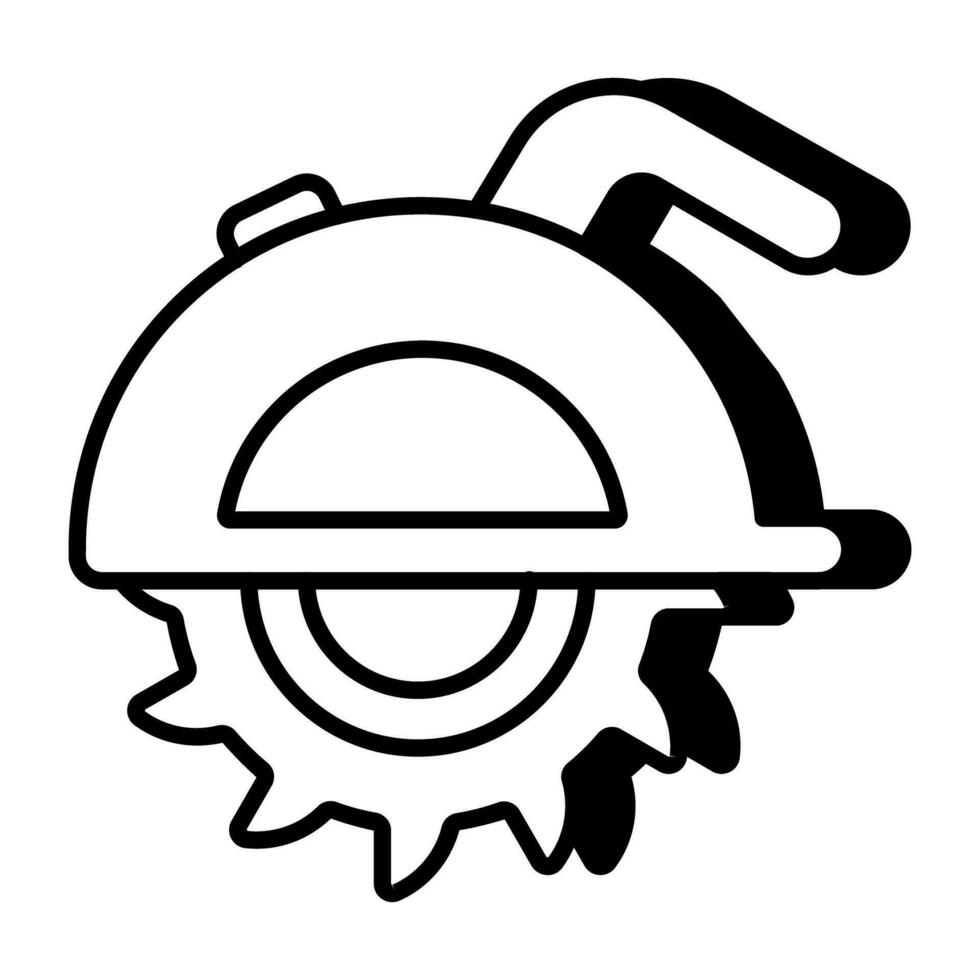
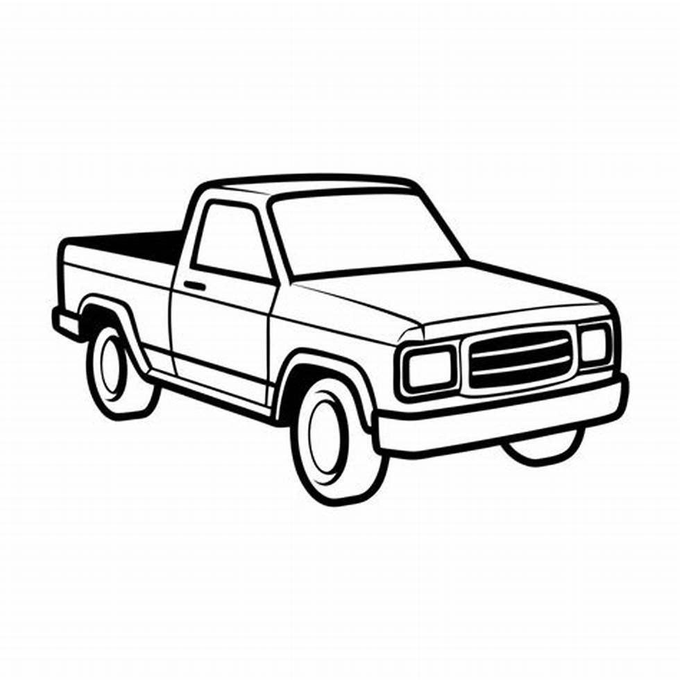

Hi! I am Daniel Wokaty. I am a student at Bob Jones University studying Business Administration with a Finance focus.
Long-Term Goals

Custom Furniture Business
After graduation from Bob Jones, my goal is to start a woodworking business where I can make high-end furniture.

Buy A House
In the next 5 years, I would love to buy a house with a decent down payment.

Buy A Truck
That's it. I want a truck :)